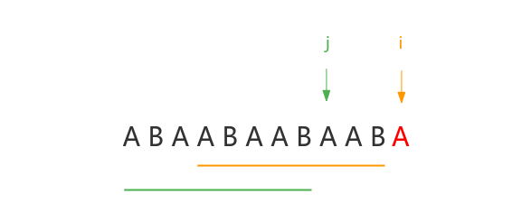
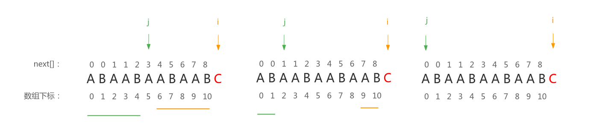
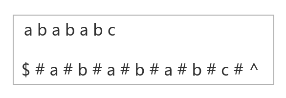
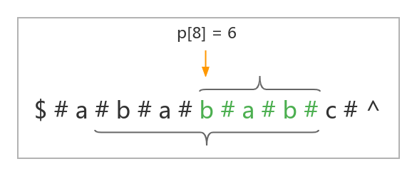
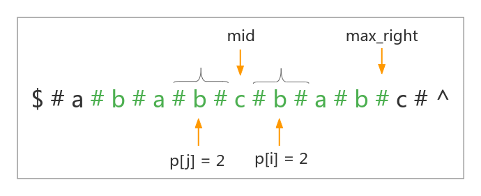
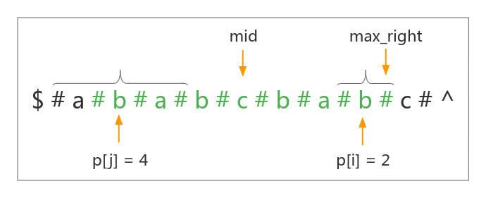
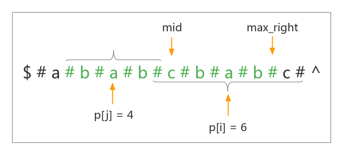

字符串
Table of Contents
字符串算法一般对输入输出的时间要求很高，所以使用 c++；
字符串哈希
拉链法：
+-----------------------------------------------------------+
| 0 | 1 | 2 | 3 | 4 | 5 | 6 | 7 | 8 | 9 | 10 | 11 | 12 | 13 |
+-----------------------------------------------------------+
↓
11 如果得到 ha(11) = 2，也就是把 11 这个数映射到 2，那么就在 2 的下面创建一个链表，存入 11；
↓
23 如果得到 ha(23) = 2，也就是把 23 这个数映射到 2，那么就在 2 的下面创建一个链表，存入 23；
开放寻址法：
hash 方式有很多种，这里使用 \(f(s) = \sum_{i=1}^l s[i] \times b^{l-i}\) （字符串 s 的长度为 l）来定义的 Hash 函数。
- 首先把一个字符串看成一个 \(p\) 进制的数（\(p\) 值是自己设置的，可以取经验值）；
把这个 \(p\) 进制的数转换成一个 \(10\) 进制的数（由于这个数可能会非常大，设置一个数 \(Q\)，取模）；
“ABCD”
A B C D -> \((1 2 3 4)_p\)
= \((1 \times p^3 + 2 \times p^2 + 3 \times p^3 + 4 \times p^4) \mod{Q}\) // 转换成一个十进制的数，期间 mod 一个数 Q
这样就把一个字符串转换为一个 [0, Q-1] 的数。
根据上面转换成10进制的方法得到所有前缀子串的哈希
先得到每个前缀子串的哈希：
ha[0] = 0; ha[1] = "A" 的哈希值 ha[2] = "AB" 的哈希值 ha[3] = "ABC" 的哈希值 ha[4] = "ABCD" 的哈希值 ha[5] = "ABCDE" 的哈希值 ...
通过前缀子串得到所有子串的哈希
hash? [高位] <---------> [低位] |-------------------------|-----------|--------------| 1 L R ↑---- 从 1 开始 已知 ha[L-1]，ha[R] ha[L-1]: 表示下面这个子串的哈希值 |------------------------| 1 L - 1 ha[R]: 表示下面这个长的子串的哈希值 |-------------------------|-----------| 1 L R 让上面的两个串的高位对齐、相减得到我们想要表示出 [L, R] 区间的哈希值 hash = ha[R] - ha[L] * p^{R - L + 1}
注意⚠️：
不能把某一个字母映射为 0
如果把 A 映射为 0，那么 \(A = (0)_{10} = 0，AA = (00)_{10} = 0\)，就会出现不同的字符串映射到同一个数，产生冲突。
- 哈希字符串时，可能会出现冲突。经验值是设置 \(p = 131\) 或 \(13331\) 时，把 \(Q\) 取为 \(2^{64}\)。
#include <cstdio> typedef unsigned long long ull; const int maxn = 1e5 + 5; int P = 131; int n, m; char str[maxn]; ull ha[maxn], p[maxn]; // unsigned long long 自动溢出，相当于 MOD 2^64 ull get(int l, int r) { return ha[r] - ha[l - 1] * p[r - l + 1]; } int main() { scanf("%d %d", &n, &m); scanf("%s", str + 1); p[0] = 1; // p^0 = 1; for (int i = 1; i <= n; ++i) { // 预处理 p 数组、前缀子串哈希 p[i] = p[i-1] * P; ha[i] = ha[i-1] * P + str[i]; } while (m --) { int l1, r1, l2, r2; scanf("%d %d %d %d", &l1, &r1, &l2, &r2); if (get(l1, r1) == get(l2, r2)) printf("Yes\n"); else printf("No\n"); } return 0; }
字符串哈希的应用：
- 字符串匹配
- 允许 k 次失配的字符串匹配
最长回文子串
manacher 和「哈希+二分」都可以在 \(O_n\) 的时间内解决。
- 最长公共子字符串
- 确定字符串中不同子字符串的数量
例题：
字典树（Trie）
顾名思义，就是一个像字典一样的树。

字典树用结点表示字母，从根结点到树上的某一结点的路径代表一个字符串。
例如 \(1 \rightarrow 4 \rightarrow 8 \rightarrow 12\) 表示的就是字符串 \(caa\)。
但并不是每一条路径都是一个我们存储过的字符串，还需要使用 \(cnt\) 数组标记这个字符串是否记录过，记录出现过几次。
如上图，如果现在要使用这个字典树存储字符串 "caa" 那么先查找是否出现过字符 'c' ；出现，那么看字符串 "c" 后面是否出现过 'a' ；出现，那么看字符串 "ca" 后面是否出现过 'a' ；出现，那么 cnt[9] ++ 。
struct Trie { int trie[100000 + 5][26], cnt[100000 + 5], idx; void insert(char str[]) { int p = 0; for (int i = 0; str[i]; ++ i) { int u = str[i] - 'a'; if (!trie[p][u]) trie[p][u] = ++ idx; p = trie[p][u]; } cnt[p] ++ ; } // 查询这个字符串出现次数 int query(char str[]) { int p = 0; for (int i = 0; str[i]; ++i) { int u = str[i] - 'a'; if (!trie[p][u]) return 0; p = trie[p][u]; } return cnt[p]; } }
字典树的应用：
- 字符串的检索
- 词频统计
- 字符串排序
- 前缀匹配
前缀函数与 KMP 算法
前缀函数定义：
给定一个长度为 \(n\) 的字符串 \(s\)，其前缀函数被定义为一个长度为 \(n\) 的数组 \(next\)，其中 \(next[i]\) 的定义是：
- 如果子串 \(s[0 \dots i]\) 有一对相等的真前缀与真后缀：\(s[0 \dots k - 1]\) 和 \(s[i - (k - 1) \dots i]\)，那么 \(next[i]\) 就是这个相等的真前缀的长度，也就是 \(next[i] = k\)；
- 如果不止有一对相等的，那么 \(next[i]\) 就是其中最长的那一对的长度；
- 如果没有相等的，那么 \(next[i] = 0\)；
简单来说 \(next[i]\) 就是，子串 \(s[0 \dots i]\) 最长的相等的真前缀和真后缀的长度。
用数学语言描述：\(next[i] = \max \limits_{k = 0 \dots i}{k : s[0 \dots k - 1] = s[i - (k - 1) \dots i]}\)
举例说明，对于字符串 ABABC ：
- \(next[0] = 0\)，因为
A没有真前缀和真后缀 - \(next[1] = 0\)，因为
AB无相等的真前缀和真后缀 - \(next[2] = 1\)，因为
ABA有一对相等的真前缀和真后缀：A，长度为 \(1\) - \(next[3] = 2\)，因为
ABAB相等的真前缀和真后缀只有：AB，长度为 \(2\) - \(next[4] = 0\)，因为
ABABC没有相等的真前缀和真后缀
朴素计算前缀函数：
遍历字符串，每次计算当前的前缀函数值 \(next[i]\) 时，令变量 \(j\) 从最大的真前缀开始尝试，如果当前长度下真前缀和真后缀不相等，则令 \(j\) 自减 \(1\)，继续匹配，直到找到最长相等的真前缀和真后缀，如果 \(j = 0\) 并且仍没有匹配成功，\(next[i] = 0\)。
优化：
相邻的前缀函数值至多增加 \(1\)
假如现在要获取字符串 ABAABAABAABA 的前缀函数，且我们已经得到了前面 \(11\) 个子串的前缀函数值：\(next[] = \{0, 0, 1, 1, 2, 3, 4, 5, 6, 7, 8, ?\}\)，接下来需要得到子串长度为 \(12\) 的前缀值：
先看子串长度为 \(11\) 的最长的相等真前后缀：也就是下图中分别用绿色下划线和橘色下划线标出的子串，在判断长度为 \(12\) 的子串的最长相等真前后缀时，不需要再重新遍历，由于相邻的前缀函数值至多增加 \(1\)，所以先判断绿色下划线标出的子串下一个位置是否等于橘色下划线标出的子串下一个位置是否相等，也就是判断 \(s[j]\) 是否等于 \(s[i]\)，如果相等那么子串长度为 \(12\) 的最长相等真前后缀就是 \(next[11] = next[10] + 1 = 9\)。

如果不相等呢？我们现在把最后一个字符换成 C ，接着讨论：
现在 \(s[j] != s[i]\)，令 \(j = next[j - 1]\)，然后接着匹配，为什么呢？我们来看看 \(j = next[j - 1] = 5\) 之后箭头的变化：

发现，\(j\) 前面的子串和 \(i\) 前面的一段子串能够匹配，如果 \(s[j] == s[i]\)，那么 \(next[i] = next[j - 1] + 1\)，如果 \(s[j] != s[j]\)，继续 \(j = next[j - 1]\)，直到匹配成功，或者 \(next[i] = 0\)。
优化的理由：
首先相邻的前缀函数值至多增加 \(1\)，这句不需要证明了，仔细想一下就能知道，所以需要 \(next[i]\) 尽可能大，必然要求后缀新增的 \(s[i]\) 也与前缀新增的字符匹配，即 \(s[i] = s[next[i - 1]]\)，如果匹配，\(next[i] = next[i - 1] + 1\)；
如果不匹配，我们希望找到对于子串 \(s[0 \dots i - 1]\)，仅次于 \(next[i - 1]\) 的第二长度 \(j\)，使得在位置 \(i - 1\) 的前缀性质仍得以保持，也即 \(s[0 \dots j - 1] = s[i - j \dots i - 1]\)：
\[\overbrace{\underbrace{s_0 ~ s_1}_j ~ s_2 ~ s_3}^{next[i - 1]} ~ \dots ~ \overbrace{s_{i-3} ~ \underbrace{s_{i-2} ~ s_{i-1}}_j}^{next[i - 1]} ~ s{i}\]
如果我们找到这样的长度 \(j\)，那么仅需要再次比较 \(s[i]\) 与 \(s[j]\)。如果它们相等，那么就有 \(next[i] = j + 1\)，否则我们需要找到子串 \(s[0 \dots i]\) 中仅次于 \(j\) 的第二长度 \(j^{(2)}\)，使得前缀性质得以保持，如此反复，直到 \(j = 0\)。如果 \(s[i] != s[0]\)，则 \(next[i] = 0\)。
观察上图发现，因为 \(s[0 \dots next[i - 1] - 1] = s[i - next[i - 1] \dots i - 1]\)，所以 \(s[0 \dots i - 1]\) 的第二长度 \(j\) 有这样的性质：\(s[0 \dots j - 1] = s[i - j \dots i - 1] = s[next[i - 1] - j \dots next[i - 1] - 1]\)
也就是说 \(j\) 等价于子串 \(s[next[i - 1] - 1]\) 的前缀函数值，即 \(j = next[next[i - 1] - 1]\)，同理，次于 \(j\) 的第二长度等价于 \(s[j - 1]\) 的前缀函数值，\(j^{(2)} = next[j - 1]\)
关于 \(j\) 的状态转移方程：\(j^{(n)} = next[j^{(n - 1)} - 1], (j^{(n - 1)} > 0)\)
void prefix_table(char pattern[]) { int n = strlen(pattern); for (int i = 1; i < n; ++ i) { int j = ne[i - 1]; while (j > 0 && pattern[i] != pattern[j]) j = ne[j - 1]; if (pattern[i] == pattern[j]) j ++ ; ne[i] = j; } }
Knuth-Morris-Pratt算法：
该算法由 Knuth、Pratt 和 Morris 在 1977 年共同发布，简称 KMP 算法，
给出一个文本串 \(text\) 与一个模式串 \(pattern\)，我们可以将其拼接在一起 \(pattern + "\#" + text\)，其中 # 是两个串中都没出现的字符。再使用上面的求前缀函数的算法，如果某个位置的前缀值是 \(len(pattern)\)，那么说明找到了一个 \(pattern\)。
如果没有说明有什么字符是不包含的，那就把判断条件改为当 \(j\) 到 \(len(pattern)\) 时发现模式串。
manacher
Manacher 算法可以线性的计算出一个字符串的最长回文串的长度。
Manacher 要求字符串的长度是奇数。所以我们在得到一个字符串后，先在这个字符串的每两个字符中间添加一个这个字符串中不会出现的字符，还要在整个串的前后添加这个字符，为了使边界好处理，我们再在整个串的前后各添加一个不是前面那个字符的在这个字符串中不会出现的字符，即：

Manacher 要求维护一个最右回文子串（并非最长回文子串）的中心位置 mid 与右边界位置 max_right ，以及一个 \(p\) 数组，\(p[i]\) 代表的是以位置 \(i\) 为中心的最长的回文串的半径。
例如下面这个字符串的 \(p[8] = 6\)：

然后在遍历整个字符串的过程中用下标 \(i\) 来不停地更新这两个值：
首先需要知道的是：在算法的整个过程中，一定有 \(i \geq mid、i \leq max\_right\)，因为我们会让 \(i\) 从串首遍历到串尾，如果以 \(i\) 为中心的最长的回文串右边界一旦大于等于 \(max\_right\)，就会更新 \(mid = i\)，\(max\_right\) 为以 \(i\) 为中心的最长回文串的右边界，显然整个遍历的过程有 \(mid \leq i \leq max\_right\)。
根据回文串的对称性，如果对称过来的 \(j = mid \times 2 - i\) 位置的回文串左边界大于维护的最右回文子串的左边界，即： \(j - p[j] > max\_left\)（代码中不会维护 \(max\_left\) 变量，这里使用它是为了更好地理解），一定有 \(p[i] = p[j]\)。

如果有 \(j\) 位置的回文串左边界小于维护的最右回文子串的左边界，即：\(j - p[j] < max\_left\)，一定有 \(p[i] = max\_right - i + 1\)（因为对称串在最右回文子串外的部分一定不会与最右边界外的一部分串对称相等，否则我们维护的最右回文子串的右边界就能继续拓展，这与我们维护的是以 \(mid\) 为中心的长度最大的最右回文子串矛盾，所以一定有 \(p[i] = max\_right - i + 1\)）

如果有 \(j\) 位置的回文串左边界等于维护的最右回文子串的左边界，即：\(j - p[j] = max\_left\)，这个时候不能确定 \(p[i]\) 的值，因为我们仅能通过最右回文知道 \(j\) 的左边界的前一个字符与右边界的后一个字符不相等；但不能确定以 \(i\) 为中心的回文串能否继续扩展。这个时候我们就需要朴素的将以 \(i\) 为中心的回文串向外拓展直到无法拓展，然后更新最右回文子串为以 \(i\) 为中心的最长回文串。

#include <cstdio> #include <cstring> #include <algorithm> using namespace std; const int maxn = 2e5 + 5; int n; char a[maxn], b[maxn]; // a 表示原串，b 表示新串 int p[maxn]; // a = "abababc", b = "$#a#b#a#b#a#b#c#^"; void init() { int k = 0; b[k ++ ] = '$'; b[k ++ ] = '#'; for (int i = 0; i < n; ++ i) b[k ++ ] = a[i], b[k ++ ] = '#'; b[k ++ ] = '^'; n = k; } void manacher() { int max_right = 0, mid; // 维护一个最右回文子串（并非最长回文子串） for (int i = 1; i < n; ++ i) { if (i < max_right) // 1. 如果 i < max_right，直接对称看 j = mid * 2 - i 的位置最长回文串半径 p[i] = min(p[mid * 2 - i], max_right - i); else // 2. 否则会朴素拓宽 p[i] = 1; /* * 朴素拓宽，但是只有 i < max_right，且 j = mid * 2 - i 位置的回文串的左边界恰好在维护的最右回文子串左边界处时 * 才会真正的开始拓宽，否则这里只会运行一次 * ml mid max_right * | | | * V V V * |-----------------------------------------------| * +----j----+ | +----i----+ */ while (b[i - p[i]] == b[i + p[i]]) p[i] ++ ; if (i + p[i] > max_right) { // 更新 max_right 与 i 的值 max_right = i + p[i]; mid = i; } } } int main() { scanf("%s", a); n = strlen(a); init(); manacher(); int res = 0; for (int i = 0; i < n; ++ i) res = max(res, p[i] - 1); printf("%d\n", res); return 0; }